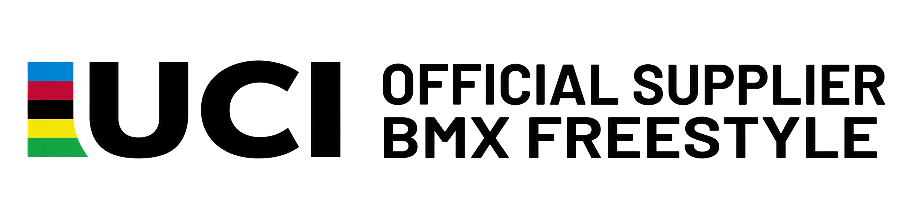

G.RAMPS w Polsce — skateparki klasy olimpijskiej i mistrzowskiej
Fundacja Sportów Miejskich jest oficjalnym przedstawicielem i dystrybutorem G.RAMPS w Polsce — łączymy ponad 30 lat międzynarodowego doświadczenia projektowego i technologicznego niemieckiej marki z lokalnym prowadzeniem inwestycji.
Projektujemy i realizujemy skateparki, parki BMX Freestyle, obiekty parkour oraz specjalistyczną infrastrukturę zawodniczą i treningową. Każdy projekt powstaje w oparciu o analizę lokalizacji, potrzeby przyszłych użytkowników, zakładany budżet oraz wymagania techniczne i formalne inwestycji.
Wspieramy samorządy i inwestorów na każdym etapie — od określenia funkcji i skali obiektu, przez koncepcję, dokumentację techniczną i przygotowanie postępowania, aż po produkcję, montaż, nadzór oraz odbiór gotowej infrastruktury.
Dzięki połączeniu kompetencji obu partnerów inwestor otrzymuje jeden zespół odpowiedzialny za cały proces: międzynarodowe know-how projektowe, lokalną koordynację, wykonawstwo i wsparcie po zakończeniu realizacji.


Doświadczenie potwierdzone realizacjami
Wybór z ponad 1100 realizacji G.RAMPS na świecie — dla najważniejszych wydarzeń sportów miejskich oraz inwestorów publicznych.


Międzynarodowe doświadczenie. Kompleksowe prowadzenie inwestycji.
Jeden zespół odpowiedzialny za cały proces — od założeń inwestycji do gotowego obiektu.
Wsparcie dla samorządów i inwestorów publicznych
Wiele problemów pojawia się jeszcze przed rozpoczęciem projektowania — na etapie wyboru lokalizacji, określenia budżetu i przygotowania dokumentacji przetargowej.
G.RAMPS Polska pomaga uporządkować założenia inwestycji i przygotować zakres, który odpowiada rzeczywistym potrzebom użytkowników.
Pomagamy uniknąć kosztownych błędów projektowych jeszcze przed ogłoszeniem przetargu.
Umów konsultację dotyczącą inwestycjiProjektujemy obiekty o różnej skali i funkcji

Obiekty przygotowywane na Mistrzostwa Świata i Europy BMX Freestyle.

Infrastruktura sportów miejskich dla jednostek samorządu terytorialnego.

Obiekty i konfiguracje przeznaczone do organizacji zawodów i wydarzeń.

Największe rampy przygotowywane na zawody i pokazy takie jak X-Games.

Np. Stuttgart, Niemcy — park parkour ok. 1000 m² na Mistrzostwa Świata w Lekkoatletyce 2019.

Np. Pekin, Chiny — rampy vert w obiekcie Camp Woodward, Asian X-Games 2010.
Od 2011 roku G.RAMPS realizuje betonowe skateparki w Europie, na Bliskim Wschodzie i w Australii. Pierwszy obiekt powstał w Dingolfing i nadal należy do najlepiej ocenianych skateparków w Niemczech.
Realizujemy zamówienia nawet na ogromne parki. 5000 m²? Nie ma problemu.
Od pierwszej analizy do gotowego obiektu
Układ funkcjonalny, geometria i rozwiązania konstrukcyjne.
Materiały, kolorystyka i forma obiektu przed rozpoczęciem realizacji.
Projekt przełożony na działającą infrastrukturę sportową.
Projekt nie kończy się na efektownej wizualizacji
Każde rozwiązanie projektowe analizujemy pod kątem funkcjonalności, bezpieczeństwa, wykonalności oraz przyszłych kosztów użytkowania obiektu.
Linie przejazdu, poziom sportowy, grupy użytkowników i sposób korzystania z obiektu.
Geometria, strefy bezpieczeństwa, widoczność, normy i przewidywalność użytkowania.
Konstrukcja, materiały, technologia produkcji, transport i sposób montażu.
Rozwiązania dopasowane do budżetu, trwałość materiałów, serwis i koszty eksploatacji.
„Dobry projekt to nie ten, który dobrze wygląda na wizualizacji, ale ten, który można sprawnie zbudować, bezpiecznie odebrać i dobrze użytkować przez lata.”
Określenie rodzaju obiektu, grup użytkowników, dyscyplin, poziomu sportowego i celów inwestycji.
Ocena terenu, dostępu, infrastruktury technicznej, otoczenia i możliwości rozwoju.
Dobór powierzchni, stref, przeszkód, ciągów komunikacyjnych i funkcji dodatkowych.
Układ funkcjonalny, geometria, linie przejazdu, materiały i integracja z otoczeniem.
Rysunki wykonawcze, przekroje, detale, specyfikacje materiałowe i rozwiązania konstrukcyjne.
Pomoc w przygotowaniu zakresu inwestycji, opisu przedmiotu zamówienia i wymagań technicznych.
Koordynacja produkcji, wykonawców, dostawców i specjalistycznych elementów.
Organizacja prac montażowych, nadzór specjalistyczny oraz kontrola zgodności z projektem.
Końcowa kontrola, przekazanie inwestycji oraz wsparcie przy przygotowaniu obiektu do użytkowania.
Porozmawiajmy o planowanej inwestycji
Na podstawie lokalizacji, dostępnej powierzchni i planowanej funkcji ocenimy możliwy zakres obiektu i zaproponujemy kolejne kroki.
Prześlij lokalizację i założenia inwestycjiAleja Wojska Polskiego 9
01-524 Warszawa
NIP 5252945292
REGON 524555525